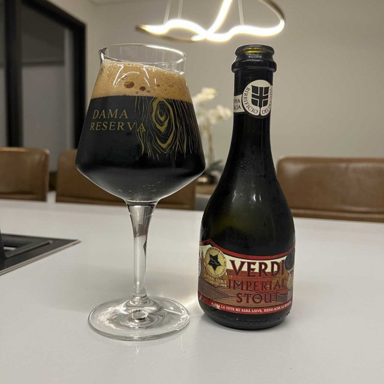
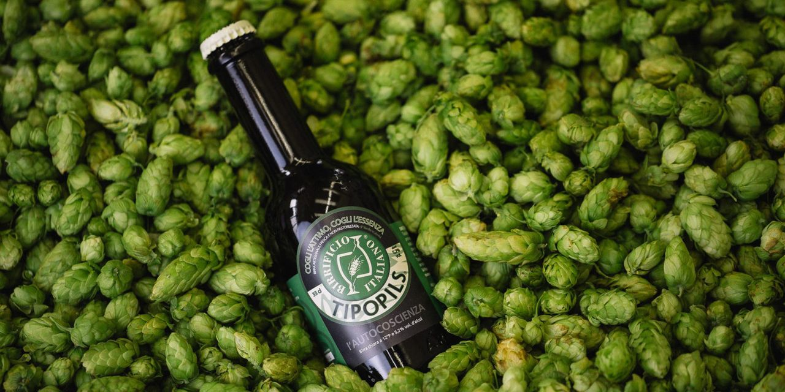
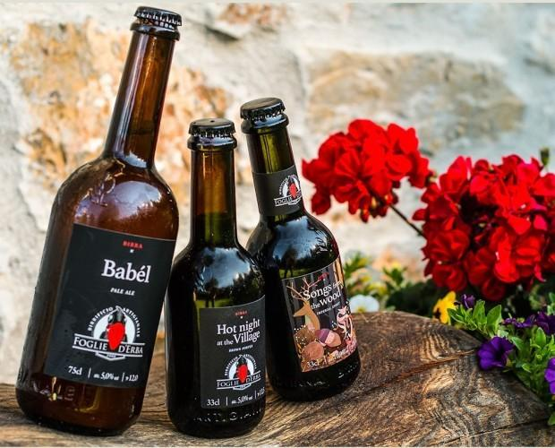
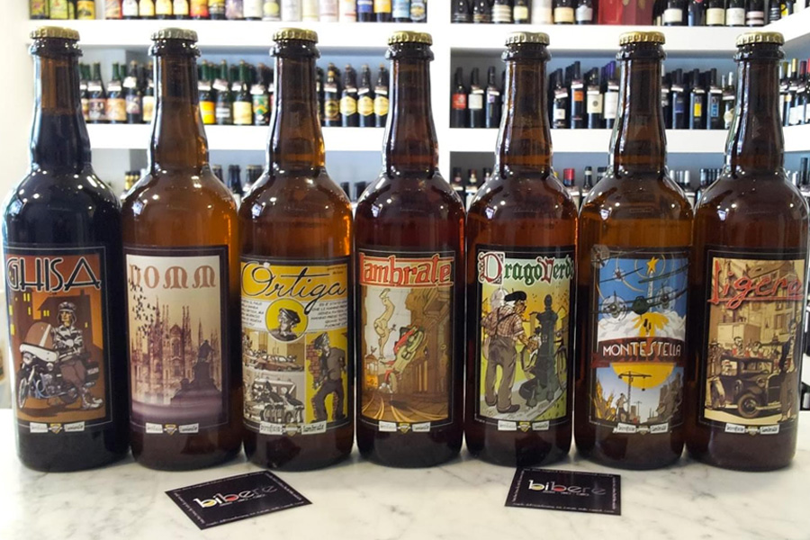
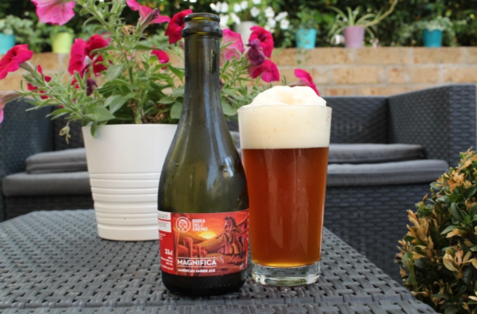

Gianmarco Tocco
Ultimo accesso: Oggi
Il Birrificio del Ducato è uno dei migliori birrifici artigianali italiani e produce birre di alta qualità con un gusto unico. La "Verdi Imperial Stout" è una birra scura e intensa, dal carattere deciso, con un profumo di malto tostato e cioccolato fondente. Al primo sorso si percepiscono subito le note di caffè, cioccolato amaro e liquirizia, che si fondono armoniosamente con le note maltate e luppolate. La consistenza cremosa e vellutata rende questa birra un'esperienza davvero unica e piacevole per il palato. L'abbinamento perfetto per questa birra sono i piatti a base di carne e cioccolato, ma può essere gustata anche da sola, magari davanti al camino in una fredda serata d'inverno. La Birra del Ducato si distingue per la sua ricerca costante dell'eccellenza e della qualità, fattori che la rendono una delle migliori birre artigianali italiane.
Metti da parte quello che sai sulle Pilsner in stile continentale. Questa è una variante più botanica, con aromi più verdi, erbacei e una sensazione leggermente rotonda e fruttata, con note finali di tè bianco e camomilla. Non farti spaventare, ma è una birra estremamente complicata, piena di personalità, straordinariamente pulita e incredibilmente dissetante. Dopo averla bevuta non penserai più alla Pilsner nello stesso modo. Abbinamento consigliato: trofie al pesto, insalate verdi, tonno o salmone crudo, pesce bianco al forno, formaggi freschi di capra.
In un mercato in cui dominano le IPA e una tendenza crescente a produrre birre estremamente amare e dai profumi di luppolo, Babél serve a ricordare il grande valore delle pale ale. Alla vista è luminosa e dorata; al naso, è leggermente agrumata e in bocca si presenta leggera, finemente frizzante, ricca in mango e papaya. È la compagna ideale per godersi il tramonto dopo una lunga e calda giornata. Abbinamento consigliato: tacos, ceviche, pollo fritto, paella, crostata di albicocche, formaggi morbidi.
La Birra Lambrate è un birrificio artigianale milanese fondato nel 1996. Le birre prodotte sono di alta qualità e hanno un sapore unico. La "Lambrate Milano" è una birra chiara con un sapore leggermente fruttato e floreale, data la presenza di luppoli Saaz e Cascade. Al gusto si percepiscono le note maltate e un lieve sentore di pane. È una birra equilibrata e molto bevibile, che si sposa bene con diversi abbinamenti culinari, soprattutto quelli a base di pesce. Un'altra birra molto apprezzata di questo birrificio è la "Montestella", una Pilsner dal sapore deciso ma non troppo forte. La Birra Lambrate è uno dei birrifici artigianali italiani più apprezzati e il suo successo è dovuto alla qualità delle materie prime e alla maestria nella lavorazione.
Questa è una birra che ti prende e non ti lascia andare via. Una prima e indimenticabile fragranza di mele rosse mature e toffee lascia progressivamente spazio a una feroce ripresa su questa discendente inglese delle pale ale. Il luppolo poco aromatico e un caramello molto intenso si immettono fortemente in bocca e svaniscono con amaro stimolante, che ha una permanenza in bocca lunga, senza essere né resinoso né appiccicoso. Abbinamento consigliato: hamburger, carne alla griglia, curry indiano, riso speziato, noodle.
